Abra o Flowlab e entre em MY GAMES
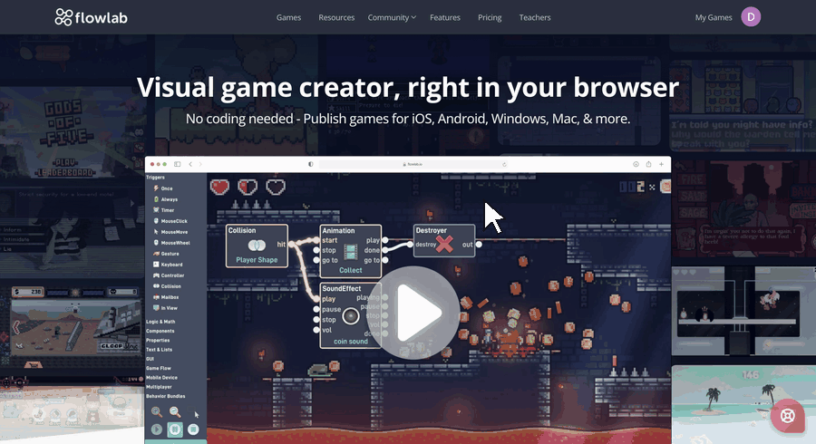

O clipe repete sozinho. Repare onde o cursor vai antes de clicar.
Foto da tela.
Abra o navegador em flowlab.io e entre com a sua conta.
No alto da página, clique em My Games. Aparecem os jogos que você já fez — os das aulas 1 a 4 estão todos aí.
- Não lembro a senha
- Chame o professor. Não crie conta nova: os seus jogos estão na antiga.
- A lista está vazia
- Confira se entrou com a mesma conta das outras aulas.
Crie um jogo novo
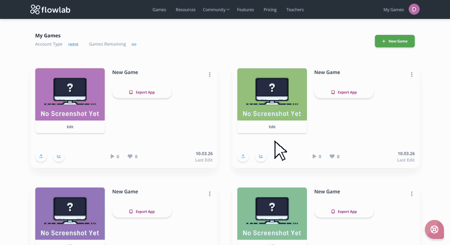

O clipe repete sozinho. Repare onde o cursor vai antes de clicar.
Foto da tela.
Clique no botão verde New Game, no canto de cima à direita da lista.
Abre uma tela com os tipos de projeto.
- Não acho o New Game
- Ele é o único botão verde da página, no alto à direita.
Escolha o PROJETO VAZIO


O clipe repete sozinho. Repare onde o cursor vai antes de clicar.
Foto da tela.
Na tela dos tipos, clique em Empty Project — o projeto vazio.
Abre o editor com uma folha branca quadriculada. É nela que o jogo vai ser montado.
- Escolhi outro e veio um jogo pronto
- Volte em My Games, apague esse e comece de novo pelo Empty Project.
Pinte o céu de DIA

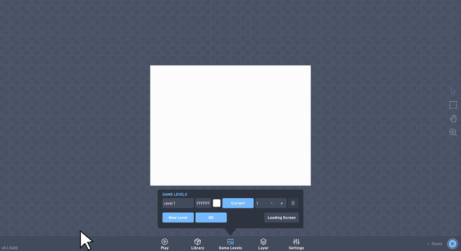
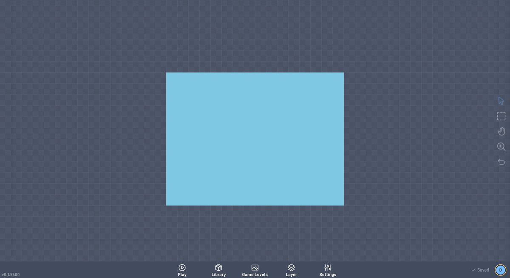
O clipe repete sozinho. Repare onde o cursor vai antes de clicar.
Foto da tela.
O jogo de hoje se passa de dia, num céu aberto.
Clique em Game Levels, na fileira de baixo. Ao lado do nome Level 1 há um campo escrito FFFFFF — é a cor do fundo.
Clique nele, apague, escreva 7EC8E3 e aperte Enter. O fundo vira um azul de céu.
O azul claro não é só enfeite: é ele que faz o fogo vermelho aparecer de longe, com tempo de você desviar.
- Digitei e não mudou
- Aperte Enter depois de escrever. Sem ele o campo não vale.
- Não acho o Game Levels
- É um dos botões da fileira de baixo do editor, com um ícone de camadas.
Crie o passarinho
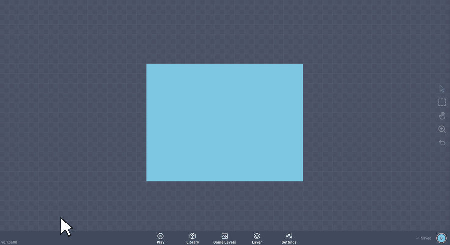
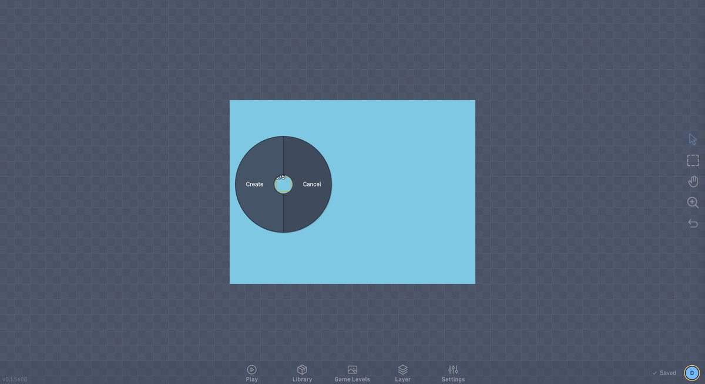
O clipe repete sozinho. Repare onde o cursor vai antes de clicar.
Foto da tela.
Clique uma vez dentro da folha azul, na metade de cima, à esquerda — é de lá que o passarinho vai começar a cair.
Abre a roda com Create e Cancel.
- Cliquei fora da folha
- Clique dentro do retângulo azul. Fora dele não nasce objeto.
- Abriu um objeto que já existe
- Você clicou numa casa ocupada. Escolha uma casa vazia.
Escolha CREATE
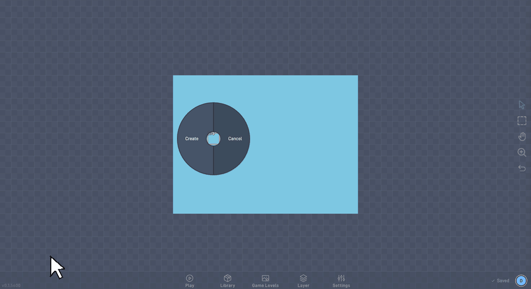
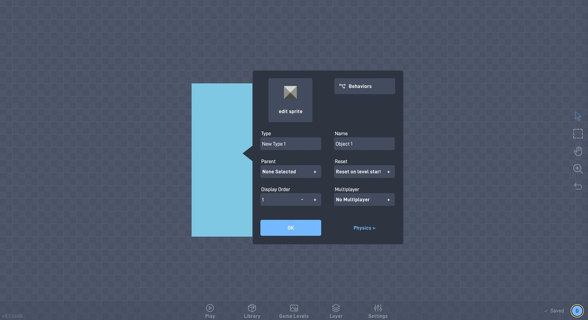
O clipe repete sozinho. Repare onde o cursor vai antes de clicar.
Foto da tela.
Na roda que abriu, clique em Create, na metade de cima.
Abre o painel do objeto novo, com os campos Name e Type e o quadrado edit sprite.
- Cliquei em Cancel sem querer
- Clique na casa de novo e escolha Create.
Escreva PASSARO nos dois campos
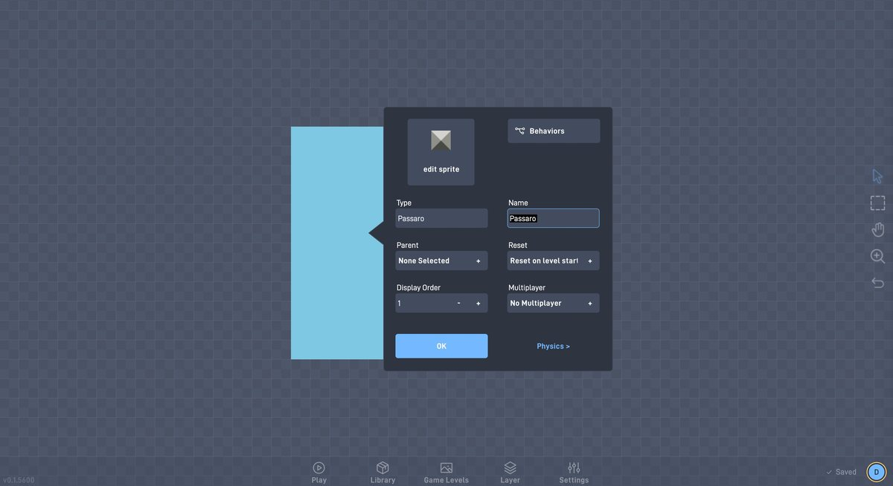
Foto da tela.
No campo Name, escreva Passaro e aperte Tab.
No campo Type, logo abaixo, escreva Passaro também.
O Name é o nome desta peça. O Type é a família dela — e é o Type que vai aparecer na lista quando, lá no passo 19, você disser quando um Fogo bater em mim. Sem ele a lista mostra New Type 1 e não dá para saber qual é qual.
- Escrevi só no Name
- Clique no campo Type e escreva lá também.
- Escrevi com acento
- Escreva sem acento: Passaro. Acento em nome de peça dá problema mais para a frente.
Escolha o desenho do passarinho
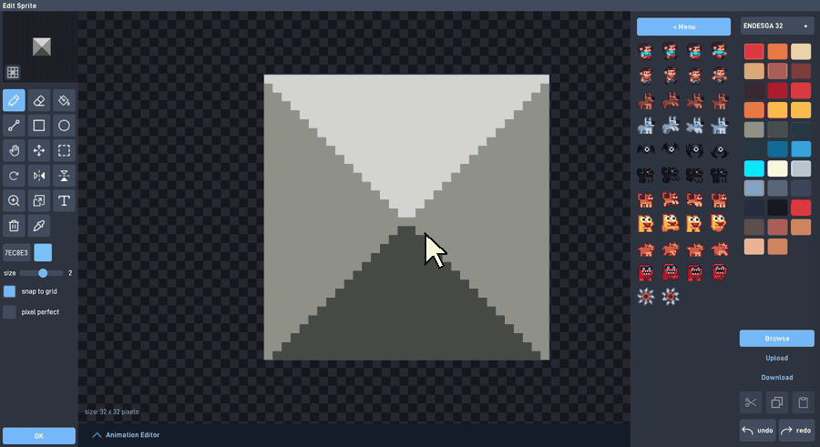
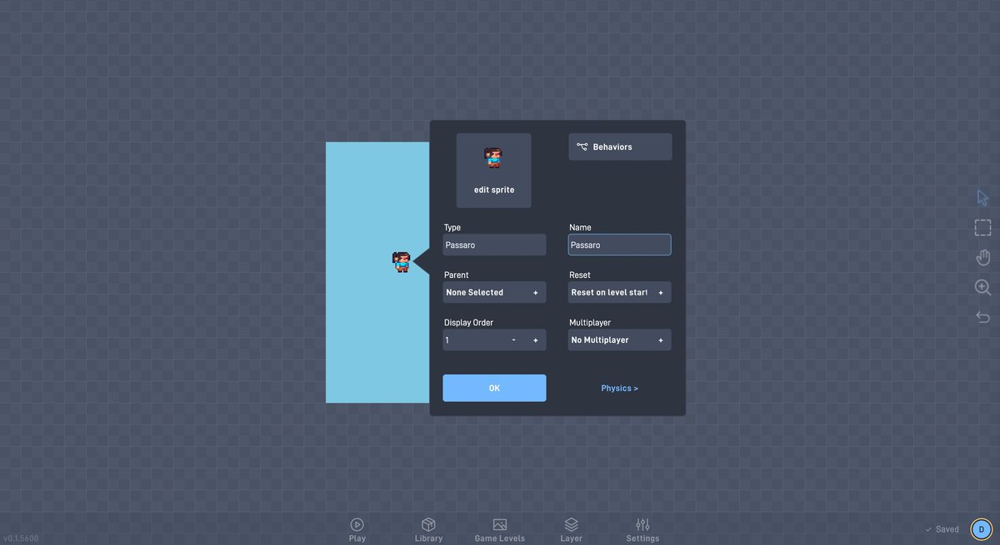
O clipe repete sozinho. Repare onde o cursor vai antes de clicar.
Foto da tela.
Clique no quadrado edit sprite, à esquerda do painel. Abre o editor de desenho.
1. Clique em Browse, embaixo da paleta de cores, à direita.
2. Se aparecer o botão azul < Menu no alto, clique nele.
3. Clique em Flowlab Sprites e depois na faixa azul Characters.
4. Clique no primeiro boneco, no canto de cima à esquerda.
Para fechar, clique em OK, no canto de baixo à esquerda.
É o mesmo boneco das aulas 1 a 3. Hoje ele não anda: ele voa.
- Não acho o Browse
- Ele fica embaixo da paleta de cores, na coluna da direita.
- Cliquei e não mudou nada
- Clique bem em cima da figura, não no espaço entre elas.
A física: pode se mexer, E CAI
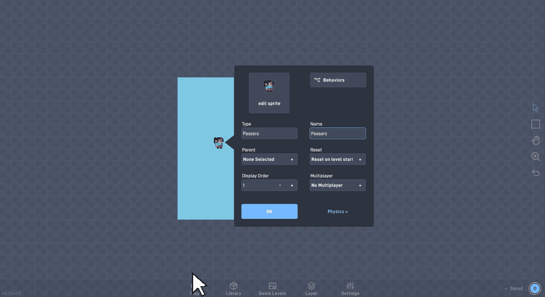
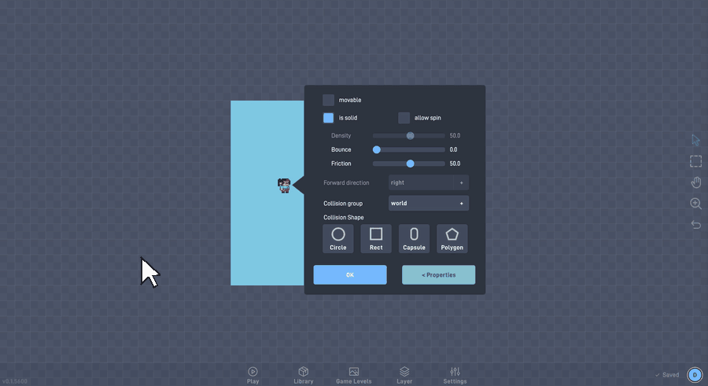
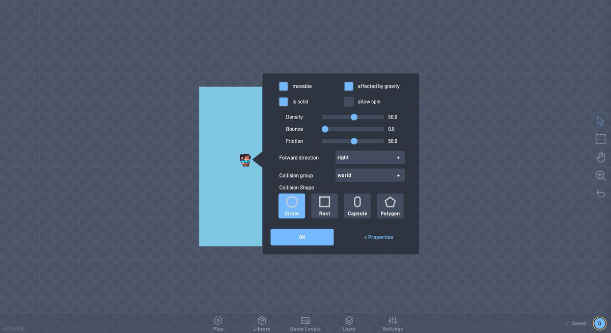
O clipe repete sozinho. Repare onde o cursor vai antes de clicar.
Foto da tela.
No painel do passarinho, clique em Physics >, no canto de baixo à direita.
Mexa em duas caixinhas — e repare que hoje é ao contrário da Aula 4:
1. movable — marque. Sem ela nenhuma força move o passarinho.
2. affected by gravity — deixe marcada. Na nave você desligou a gravidade; aqui ela é metade do jogo. O passarinho cai sozinho o tempo todo, e a barra de espaço é a única coisa que o segura no ar.
Feche no OK azul.
- Desmarquei a gravidade sem querer
- Abra a física de novo e marque. Sem gravidade o passarinho fica parado no ar e não há jogo.
- Não acho Physics
- É um texto azul claro, pequeno, no canto de baixo à direita do painel.
Faça o chão, senão o passarinho some
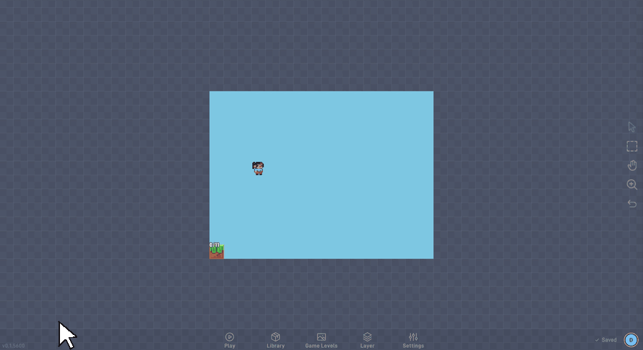
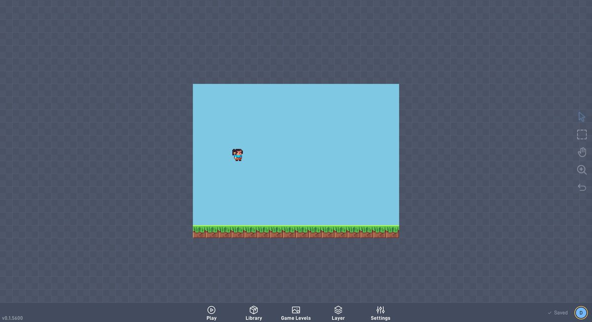
O clipe repete sozinho. Repare onde o cursor vai antes de clicar.
Foto da tela.
Feche o painel no OK azul.
Clique na casa do canto de baixo à esquerda da folha e escolha Create. Em Name escreva Chao e em Type escreva Chao. Em edit sprite, pelo Browse, pegue o primeiro bloco de Flowlab Sprites › Blocks — o de terra com grama. Feche no OK.
Agora repita a peça por toda a fileira de baixo: clique nela, escolha Clone e clique nas casas à direita, uma de cada vez, até a ponta. Para terminar, clique em done cloning.
Por que o chão vem antes de jogar: com gravidade e sem chão, o passarinho cai para fora da tela em menos de cinco segundos. Você apertaria Play e ele já teria sumido, sem você ver nada.
- Ficou um buraco no meio
- Clique na casa vazia, escolha Clone e preencha.
- O chão não precisa de física?
- Não. Ele fica parado, e é isso que a gente quer.
O pulo de um botão só
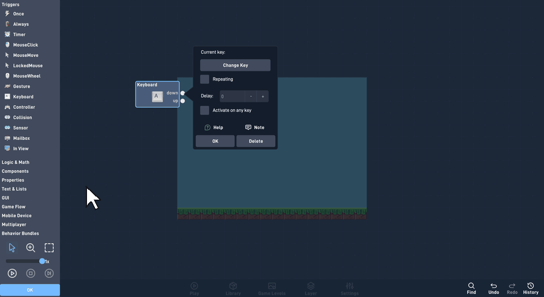
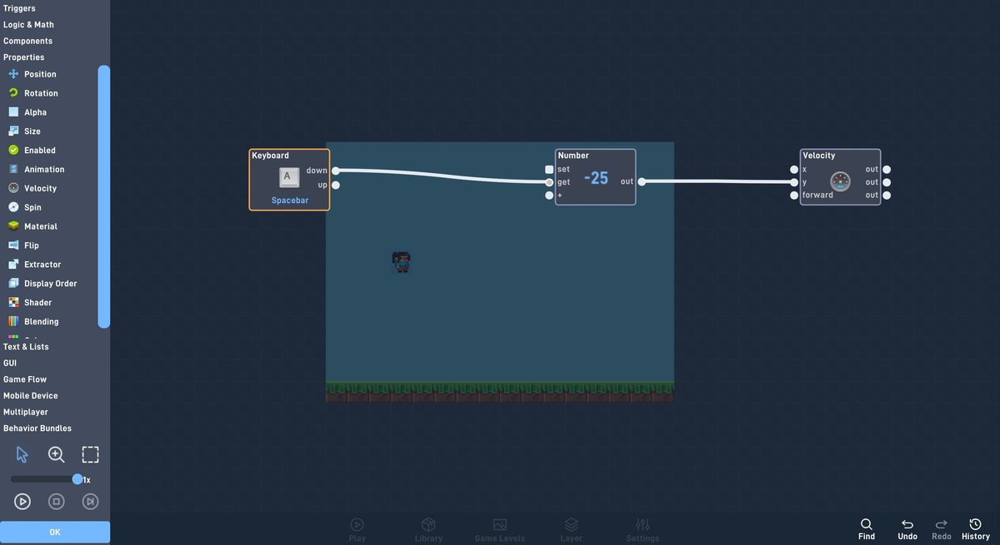
O clipe repete sozinho. Repare onde o cursor vai antes de clicar.
Foto da tela.
Clique no passarinho e depois em Behaviors. Abre a mesa de blocos, vazia.
É o mesmo trio da Aula 3, o da lava. Arraste três blocos, bem espalhados na parte de cima da mesa:
1. Em Triggers, o Keyboard — à esquerda.
2. Em Logic & Math, o Number — no meio.
3. Em Properties, o Velocity — à direita.
A tecla: clique devagar no Keyboard, clique em Change Key e aperte a barra de espaço. O campo passa a mostrar Spacebar. Feche no OK.
O número: clique devagar no Number e clique vinte e cinco vezes no botão −. Ele fica -25. É bastante clique — vale ir contando em voz alta.
E os dois fios: da bolinha down até a bolinha get, e da bolinha out até a bolinha y do Velocity — a segunda das três.
Lendo em voz alta: quando a barra de espaço descer, pegue este número e use como velocidade para cima. O menos é o que faz subir.
- Liguei no x sem querer
- O x é o dos lados, da Aula 4. Aqui é o y, a bolinha do meio.
- Cansei de clicar no −
- Pode parar em -20 ou ir até -30. Menos que isso e o passarinho quase não sobe.
- O Keyboard não mostra tecla nenhuma
- Ele nasce vazio, e vazio não dispara nunca. Clique devagar nele, Change Key, e aperte o espaço.
- O fio não gruda
- Solte os blocos mais LONGE uns dos outros e arraste devagar, de bolinha a bolinha.
Jogue e bata asa
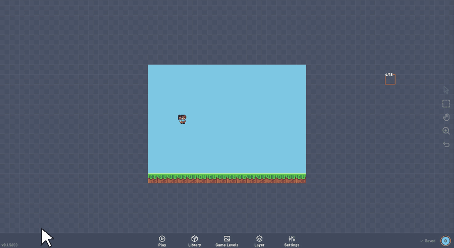
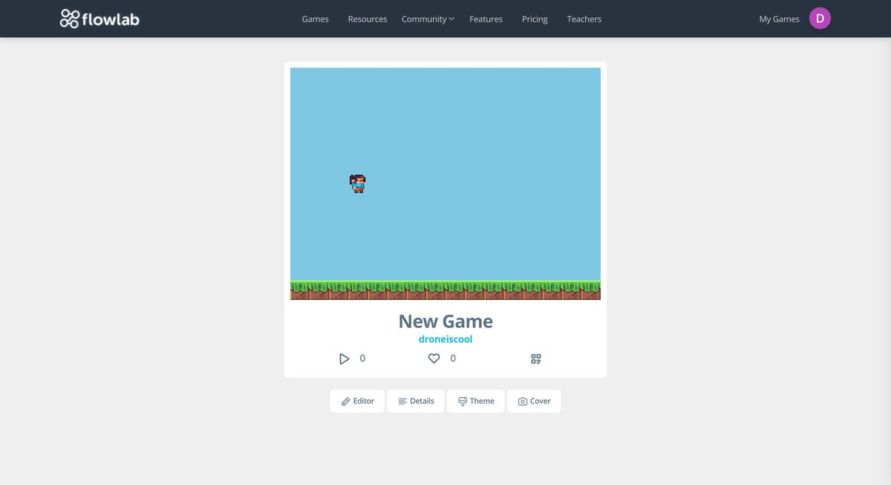
O clipe repete sozinho. Repare onde o cursor vai antes de clicar.
Foto da tela.
Feche as duas telas (o OK da mesa de blocos e o OK azul do painel) e clique em Play, na fileira de baixo.
Clique uma vez dentro do jogo para ele ouvir o teclado. Agora aperte a barra de espaço, de novo e de novo.
O passarinho sobe a cada toque e cai sozinho entre um toque e outro. Esse vaivém é o jogo inteiro: você não controla onde ele está, só quando ele sobe.
- Ele não sobe
- Clique uma vez dentro do jogo primeiro. E confira o passo 11: o fio tem de chegar no y.
- Ele sobe e não desce
- A gravidade dele está desmarcada. Volte ao passo 9.
- Ele sobe demais e some
- O número está muito negativo. Deixe perto de -25.
Crie a bola de FOGO
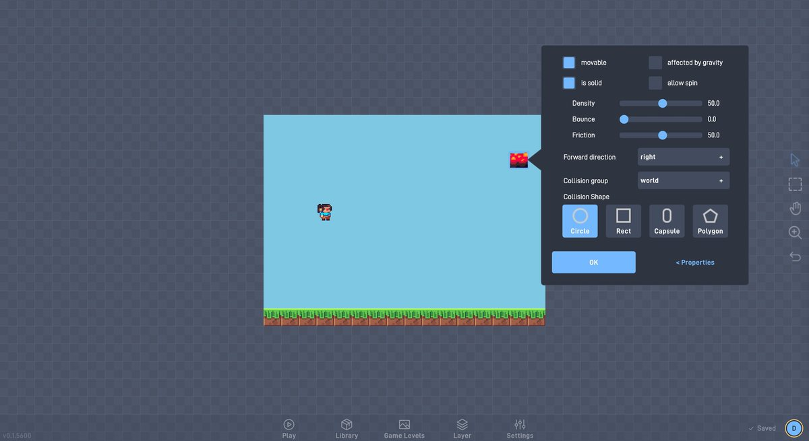
Foto da tela.
Volte ao editor pelo botão Editor, embaixo do jogo.
Clique numa casa vazia no canto de cima à direita e escolha Create. Escreva Fogo nos dois campos. Em edit sprite, pelo Browse, vá em Flowlab Sprites › Terrain e pegue a lava vermelha com bolhas — ela está lá embaixo na grade, role até achar.
Em Physics >, marque movable e desmarque affected by gravity. Aqui a gravidade atrapalha: com ela o fogo cairia numa curva, e a altura que você vai sortear no passo 15 perderia o sentido. Sem ela, ele atravessa a tela em linha reta.
Esta peça fica parada no canto: ela é o molde, não o fogo do jogo.
- Não acho a lava
- Ela fica no fim da grade de Terrain. Role a grade para baixo.
- O fogo cai em vez de andar reto
- A gravidade continua marcada. Abra a física do Fogo e desmarque.
O fogo anda para a esquerda
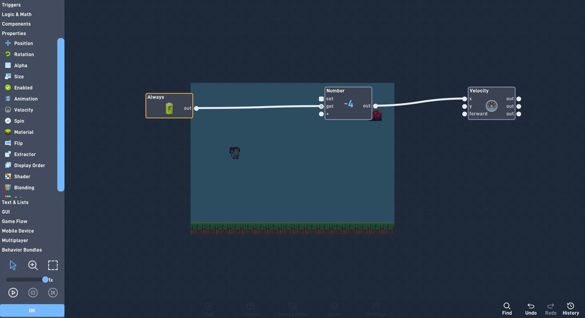
Foto da tela.
Com o fogo ainda aberto, clique em Behaviors.
É o trio outra vez, agora com o Always no lugar do Keyboard:
1. Em Triggers, o Always — à esquerda.
2. Em Logic & Math, o Number — no meio. Clique devagar nele e clique quatro vezes no botão −: fica -4.
3. Em Properties, o Velocity — à direita.
Ligue out do Always na bolinha get do Number, e out do Number na bolinha x do Velocity — a primeira das três, a dos lados.
Lendo em voz alta: sempre, ande para a esquerda. O menos é o que faz ir para a esquerda em vez da direita.
- O fogo vai para a direita
- O número ficou positivo. Clique no − até ele mostrar -4.
- O fogo sobe ou desce
- O fio foi parar no y. O certo é o x, a bolinha de cima.
Cada fogo numa altura sorteada
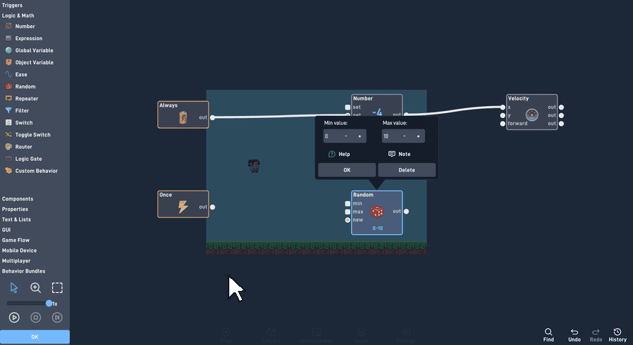
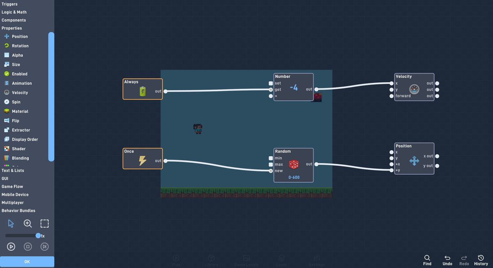
O clipe repete sozinho. Repare onde o cursor vai antes de clicar.
Foto da tela.
Ainda na mesa do fogo, mais abaixo, monte o bloco novo do dia:
1. Em Triggers, arraste o Once — ele dispara uma vez só, no instante em que a peça nasce.
2. Em Logic & Math, arraste o Random — o bloco do dadinho. Ele sorteia um número.
3. Em Properties, arraste o Position.
O Random nasce sorteando de 0 a 10, e dez pixels ninguém vê. Clique devagar nele e, no campo Max value, apague o 10 e escreva 600. Embaixo do dadinho passa a aparecer 0-600.
Agora os fios: out do Once até new do Random, e out do Random até a bolinha +y do Position — a quarta, a de baixo.
Repare no + do +y: ele não diz vá para esta altura, diz desça mais um tanto a partir de onde você nasceu. É por isso que você não precisa saber nenhum número da sua fase.
- Não acho o campo Max value
- Ele fica na linha de baixo do rótulo, dentro da janelinha de ajustes do Random.
- Liguei no y em vez do +y
- O y manda a peça para um lugar fixo e todas ficam na mesma altura. O certo é o +y, a quarta bolinha.
- Continua tudo na mesma altura
- Confira se embaixo do dadinho diz 0-600 e não 0-10.
Crie o SOLTADOR lá no alto
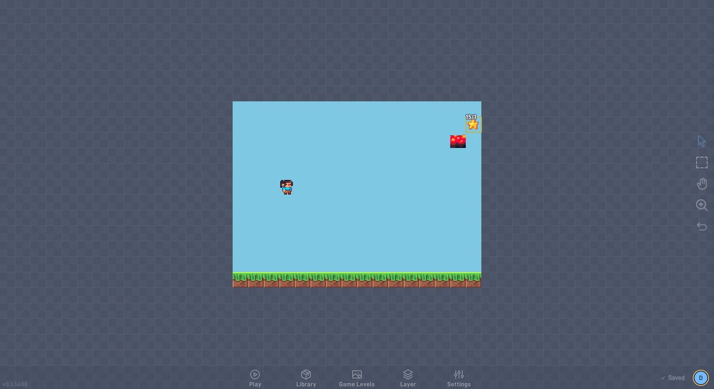
Foto da tela.
Feche as duas telas. Clique numa casa vazia no alto da folha, bem na ponta direita, e escolha Create.
Escreva Soltador nos dois campos. Em edit sprite, pelo Browse, pegue a estrela dourada em Flowlab Sprites › Objects.
Não mexa na física dele: o soltador fica parado de propósito. Ele não é inimigo — ele é a máquina que fabrica as bolas de fogo.
- Coloquei no meio da tela
- Clique nela, escolha Delete e faça de novo no alto à direita. No meio da tela ele atrapalha o passarinho.
O soltador solta fogo sem parar
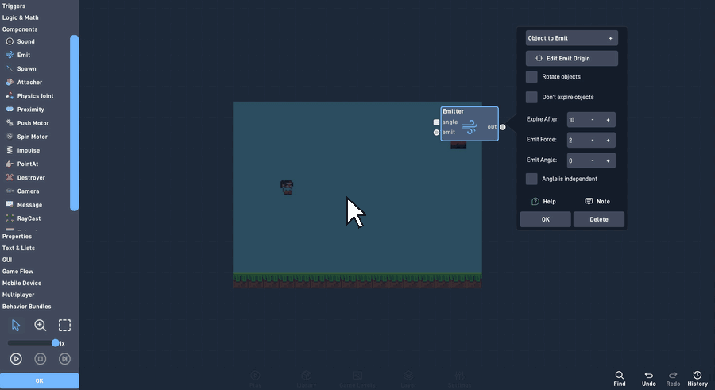
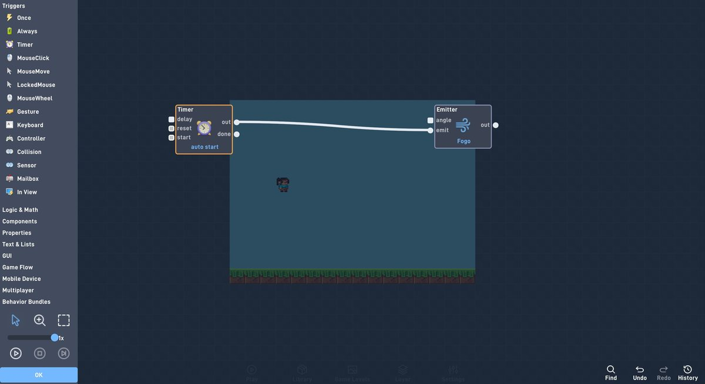
O clipe repete sozinho. Repare onde o cursor vai antes de clicar.
Foto da tela.
Com o soltador aberto, clique em Behaviors.
Em Components, arraste um Emit para a mesa — na coluna ele se chama Emit, mas depois de solto o título dele é Emitter. É o mesmo bloco da Aula 4, o que fazia o tiro sair da nave.
Clique devagar nele e ajuste duas coisas: Object to Emit = Fogo, e Expire After = 300 (são trinta avos de segundo: dá dez segundos, o bastante para o fogo atravessar a tela toda).
Em Triggers, arraste um Timer para a esquerda dele. Clique devagar no Timer e marque Repeat Forever.
Ligue a bolinha out do Timer na bolinha emit do Emitter.
- Só sai um fogo e para
- Falta marcar Repeat Forever no Timer.
- A lista do Emitter não mostra Fogo
- Falta o Type do Fogo. Volte ao passo 13 e escreva Fogo também no campo Type.
Jogue: o fogo vem
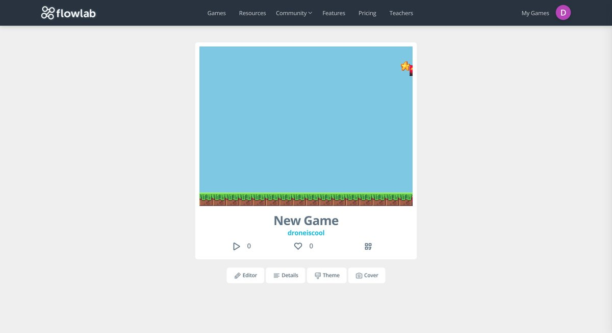
Foto da tela.
Feche as duas telas e clique em Play.
Clique uma vez dentro do jogo e bata asa com a barra de espaço. As bolas de fogo vêm da direita, cada uma numa altura diferente, e você desvia subindo na hora certa.
Ainda não acontece nada quando o fogo encosta em você. Isso é o próximo passo.
- Vêm todas na mesma altura
- Volte ao passo 15: confira o 0-600 embaixo do dadinho e o fio no +y.
- Não vem fogo nenhum
- Confira o Repeat Forever do Timer e se o emissor está em Fogo.
- O fogo some rápido demais
- O Expire After ficou pequeno. Abra o emissor e ponha 300.
Encostou no fogo, recomeça
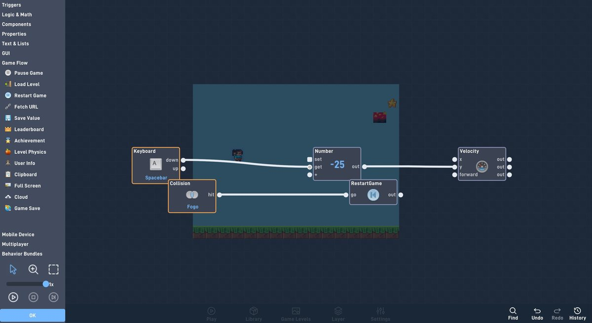
Foto da tela.
Volte ao editor, clique no passarinho e depois em Behaviors.
Mais abaixo na mesa, longe do trio do pulo, monte o fim de jogo:
1. Em Triggers, arraste um Collision.
2. Em Game Flow, arraste um Restart Game para a direita dele.
3. Ligue a bolinha hit na bolinha go.
E diga com quem a batida conta: clique devagar no Collision e, na lista Any Type, escolha Fogo.
Sem essa escolha o bloco dispara com qualquer coisa — inclusive com o chão, que o passarinho encosta o tempo todo. O jogo reiniciaria sozinho sem parar, e nada na tela diria por quê.
- O jogo reinicia sem parar
- O Collision ficou em Any Type e está contando o chão. Escolha Fogo na lista.
- Encosto no fogo e não acontece nada
- Confira o fio: ele tem de ir de hit até go.
O PLACAR na tela
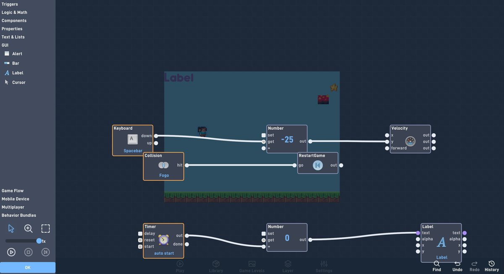
Foto da tela.
Ainda na mesa do passarinho, mais abaixo, monte o bloco que dá nome à aula:
1. Em Triggers, arraste um Timer e marque Repeat Forever nele.
2. Em Logic & Math, arraste um Number. Deixe o valor em 0: é daí que o placar parte.
3. Em GUI, arraste um Label. Repare que a palavra Label já aparece escrita dentro da sua fase — ele escreve na tela.
Os fios, e preste atenção na bolinha: out do Timer até a bolinha + do Number — a terceira, a de baixo — e out do Number até text do Label.
A bolinha + não escreve um número: ela soma 1 ao que já estava lá. Então o relógio bate, o número sobe de um, e o Label mostra na tela. É assim que todo placar de todo jogo funciona.
- O número não sobe
- O fio foi para a bolinha set ou get. Ele tem de chegar na +, a de baixo.
- O placar está pequeno demais
- Clique devagar no Label e puxe a régua size para a direita.
- Aparece a palavra Label em vez do número
- O fio do Number não chegou no text. Refaça esse fio.
Jogue e mande o link
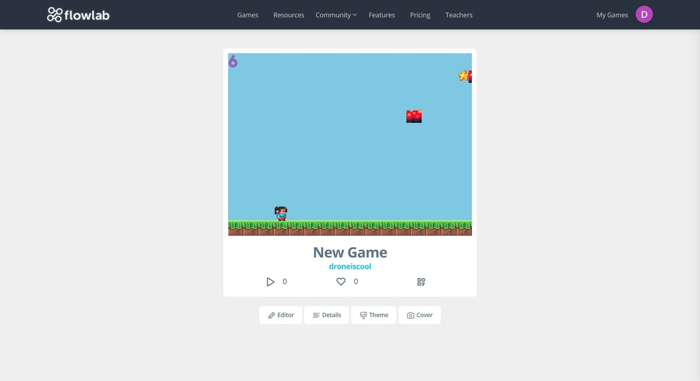
Foto da tela.
Feche as duas telas e clique em Play.
Clique uma vez dentro do jogo e bata asa. O placar sobe sozinho enquanto você se segura no ar, as bolas de fogo vêm em alturas sorteadas, e encostar numa delas recomeça tudo — com o placar voltando ao zero.
Para mandar para alguém: copie o endereço que está na barra do navegador e mande. Quem abrir já joga, sem instalar nada — e dá para disputar quem faz o maior número.
- O placar não zera ao reiniciar
- Ele zera sim, junto com o jogo. Se não zerou, confira se o Number do passo 20 está em 0.
- Está difícil demais
- Abra o Timer do soltador e aumente o Delay: sai menos fogo.
- Está fácil demais
- Diminua o Delay do mesmo Timer, ou deixe o fogo mais rápido em -6.